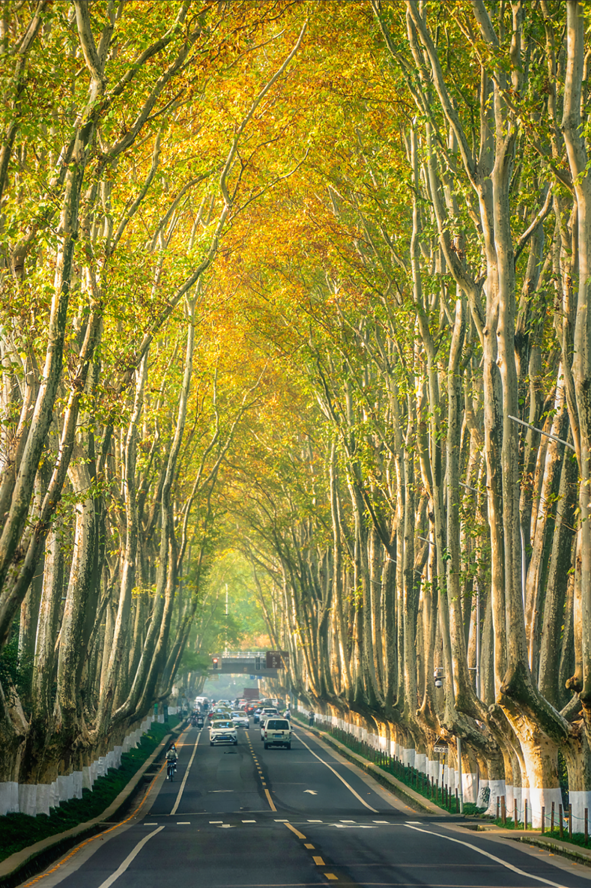
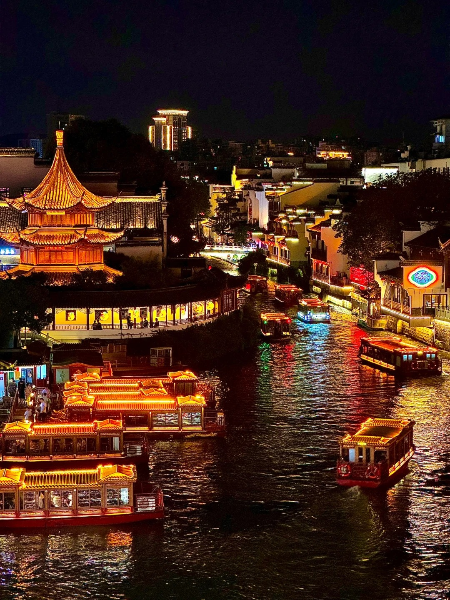
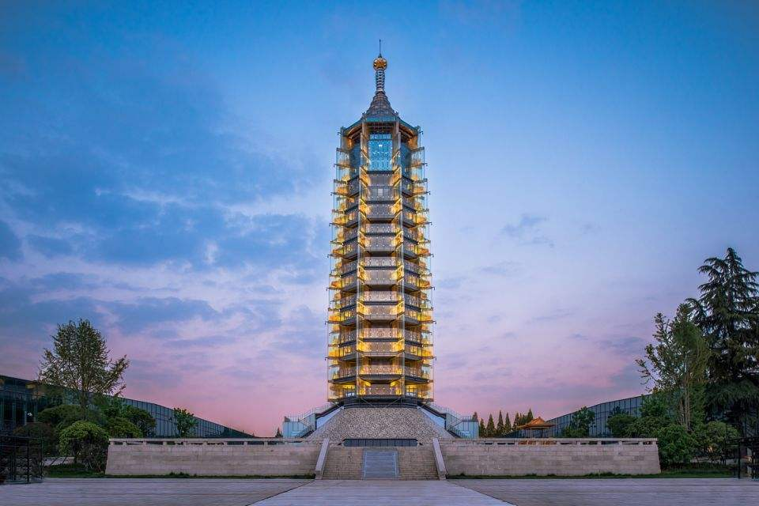
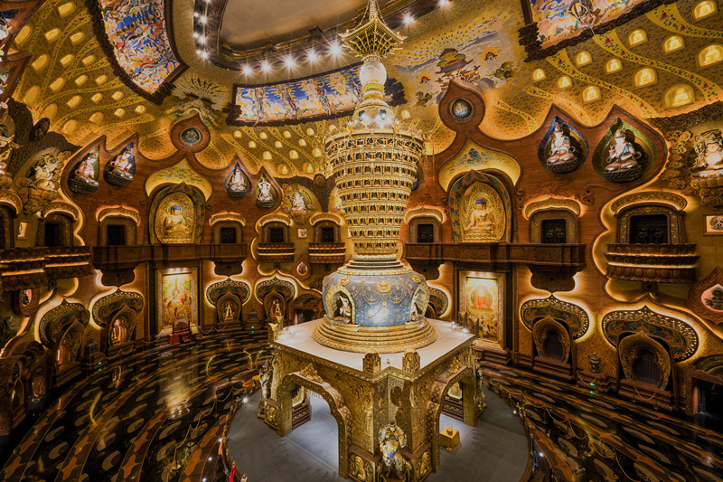
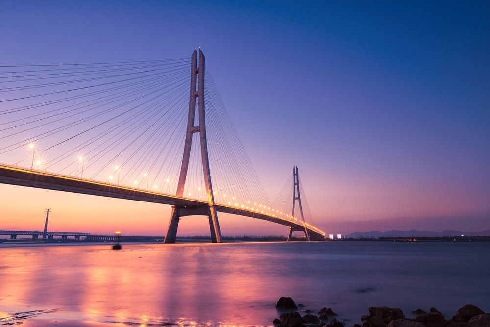

南京：金陵風華五日遊
穿越六朝古都，體驗深度美學
DAY 01 : 鐘山綠肺與金陵美食
- 📍 鐘山風景區： 漫步梧桐大道與石像路，感受深秋金陵美景。
- 📍 中山陵： 挑戰階梯登頂，俯瞰整座南京城壯闊全貌。
- 🍽️ 南京大排檔： 必吃鹽水鴨、美齡粥，體驗古色古香用餐氛圍。


DAY 02 : 民國風情與文博光影
- 📍 南京博物館： 中國三大博物館之一，必訪民國館沈浸式街道。
- 📍 總統府： 民國政權核心遺址，感受中西合璧建築魅力。
- 📍 六朝博物館： 貝聿銘之子設計，極致簡約的當代美學空間。
DAY 03 : 秦淮夜色與科技遺址
- 📍 夫子廟夜遊： 乘坐秦淮畫舫，親身感受「夜泊秦淮」的詩意。
- 🍽️ 李記清真館： 在地排隊名店，必吃爆汁牛肉鍋貼與雲吞。
- 📍 大報恩寺： 結合現代光影科技的佛教遺產，視覺效果震撼。


DAY 04 : 長江日落與古寺禪意
- 📍 古雞鳴寺： 南京最靈驗的千年梵剎，漫步其間感受清幽禪意。
- 📍 南京長江大橋： 觀賞夕陽餘暉灑落江面的震撼美景，見證歷史建築。
DAY 05 : 佛頂宮之禮與古風遺夢
- 📍 牛首山佛頂宮： 斥資百億打造的當代藝術盛宴，視覺體驗極其奢華震撼。
- 📍 金陵小城： 傍晚沈浸式古風小鎮，夜晚華燈初上如夢如幻，穿漢服拍照絕配。
